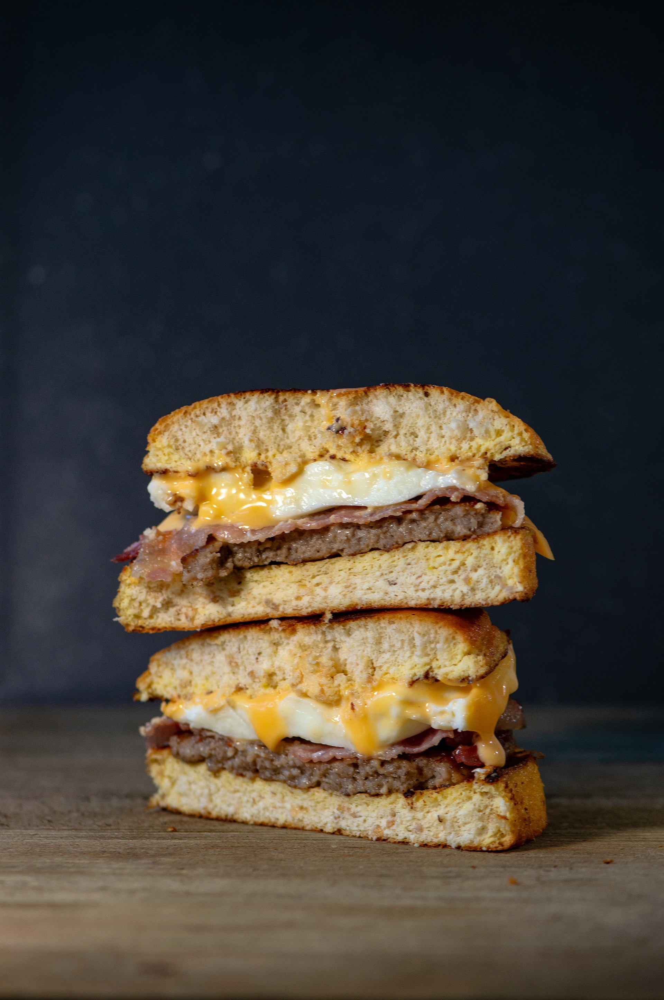

Egg Sandwich

Description
An egg sandwich is a sandwich with some kind of cooked egg filling. Fried eggs, scrambled eggs, omelette,
sliced boiled eggs and egg salad (a mix of chopped cooked egg and mustard and mayonnaise) are popular options.
In the fifth case, it may be called an egg salad sandwich.
Ingredients
- 2-3 eggs
- 4 slices of bread
- 2 tbsp mayonnaise
- 1 tbsp mustard sauce
- 1/2 tsp black pepper powder
- 1/2 red chili powder
- 1/2 tsp oregano powder
- 1/2 tsp garlic powder
- Freshly chopped coriander
- 1 sliced tomato
- 2-4 leaves of lettuce
- 1 tbsp butter
- Salt to taste
Steps:
- Start by boiling eggs. Once boiled, peel the shell and let the eggs cool down.
- Now finely chop the boiled eggs.
- Add mayonnaise, mustard sauce, and spices like pepper, chili, oregano, garlic
powder, coriander, and salt in a bowl. Mix them well.
- Now add the chopped eggs to the sauces and gently mix them.
- Take a slice of bread and put lettuce and slices of tomatoes.
- Now add the egg and sauce mixture to it and top it with another slice of bread.
- In a hot pan apply some butter. Put the egg sandwich on it and cook the sides
in butter for 1 minute.
- Take it off the pan and enjoy your creamy egg sandwich